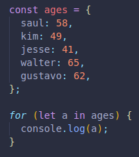
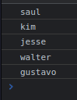
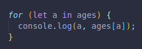
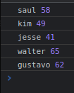
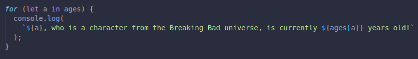
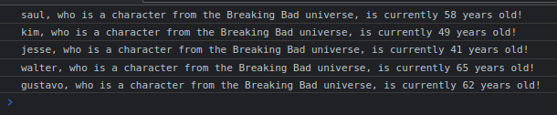
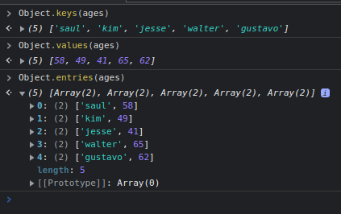
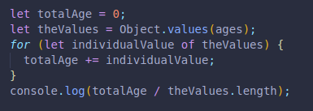
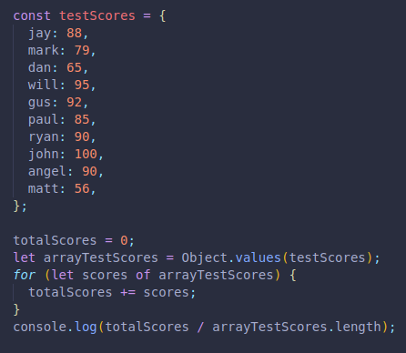

for of loops are used all the time, but for in loops are rare.
We can use the same for of loop syntax when working with objects, only replacing of, for the word in, instead.
Since objects have keys and values, a simple for in loop will give us the keys.
 To access the values of the object keys, we need to acknowledge a second variable, which will automatically be assigned to the child of the key, in this case being the values.
 We can then create strings with the information!
 We can also acces the keys and values with built in functions from JS.
The following will create an array of strings with the requested data.
Object.keys(), Object.values() and Object.entries() will helps us.
Object.entries() will give us the pair, key and value!
This one is a nested array, each pair is 2 strings, the pair is an array inside the parent array.
We can use what we know to get the average age of the object we made.
We need to create a variable to store the sum of all ages, it should be set to 0.
We need to obtain the values, we do this by creating a variable and making it the array returned from Object.values(ages).
Now we have an array of only the values, which we can work with with a regular for of loop.
By creating a for of loop, th let variable part will be accessing each individual array item, in this case being the age of each person.
We can now have it perform an action for all array items, it will be to sum each item from our array of values. It will do this until all items have been summed.
Our variable for the sum of all ages, which was initially 0, should now be accurate.
We can now console log the total ages variable divided by the number we want. In case we do not know tha lenght, we can always use .lenght to divide by the number of items in our array.
Notice that this does not work with objects, it works in this case case because it is an array we created FROM an object.
RESULTS IN 55.
Same but with testscores.
RESULTS IN 84.